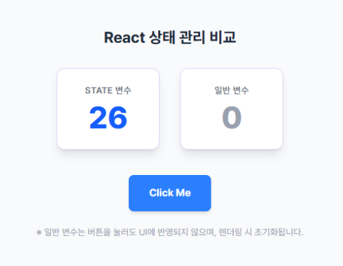
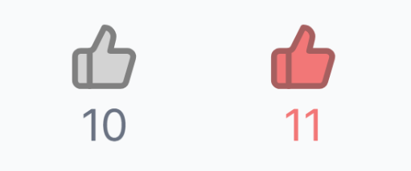

01
이벤트 핸들러 (Event Handler)
사용자의 행동(클릭, 입력, 제출 등)에 반응하여 실행되는 함수를
말합니다. React에서는 JSX 속성으로 이벤트 핸들러를 전달하며,
onClick, onChange 등
camelCase로 작성합니다.
1.1. 이벤트 핸들러 전달 방식
방법 A: 함수 참조 전달 (로직이 복잡하거나 재사용 시)
const handleClick = () => alert("클릭됨!"); return <button onClick={handleClick}>클릭</button>;
방법 B: 화살표 함수 전달 (간단한 로직 혹은 인자 전달 시)
// 인자가 필요한 경우 반드시 화살표 함수 사용 return <button onClick={() => handleClick("홍길동")}>클릭</button>;
02
useState
컴포넌트의 상태(State)를 관리하는 가장 기본적인 Hook입니다. 값이 변하면 리액트가 이를 감지하여 UI를 자동으로 갱신(Re-render)합니다.
2.1. 일반 변수의 한계
- 반응성 부재: 값이 변해도 렌더링 신호를 보내지 않아 UI가 업데이트되지 않습니다.
- 데이터 휘발성: 재렌더링 시 함수가 재실행되면서 일반 변수는 초기화됩니다.
2.2. useState 문법 및 실습

실습 예시: 클릭 시 숫자가 올라가는 카운터
import React, { useState } from "react"; function Example() { const [stateCount, setStateCount] = useState(0); return ( <div> {/* State 카운트 카드 */} <div> <h1>{stateCount}</h1> </div> {/* 버튼 액션 영역 */} <div> <button onClick={() => { setStateCount(stateCount + 1); }} > Click Me </button> </div> </div> ); } export default Example;
03
useRef
렌더링에 영향을 주지 않으면서 값을 기억하거나, DOM 요소에 직접 접근할 때 사용합니다.
-
비반응성:
.current값이 변해도 재렌더링이 발생하지 않습니다. - 지속성: 재렌더링 후에도 데이터가 초기화되지 않고 유지됩니다.
3.1. DOM 접근 예시
const inputEl = useRef(null); const onButtonClick = () => inputEl.current.focus(); return <input ref={inputEl} type="text" />;
04
Hook 비교 및 실습
| 구분 | 일반 변수 (let) | useState | useRef |
|---|---|---|---|
| 렌더링 유발 | X | O | X |
| 데이터 유지 | 초기화됨 | 유지됨 | 유지됨 |
실습 : 좋아요 토글
상태 변화가 필요한 likeCnt를
useState를 사용해 구현하며, UI 테마나 조건부
스타일링(Tailwind)을 적용해 동적인 웹 페이지를 완성합니다.

import React, { useState } from "react"; import { ThumbsUp } from "lucide-react"; function ExampleLike() { const [isLike, setIsLike] = useState(false); const [likeCnt, setLikeCnt] = useState(10); const nextLikeStatus = !isLike; const handleLikeToggle = () => { setIsLike(nextLikeStatus); setLikeCnt(nextLikeStatus ? likeCnt + 1 : likeCnt - 1); console.log("좋아요 토글"); }; return ( <div className="flex flex-col items-center p-10"> <div className={isLike ? "text-[#BB7070]" : "text-gray-500"}> <ThumbsUp size={100} onClick={handleLikeToggle} color={isLike ? "#a65f5f" : "gray"} fill={isLike ? "#F27777" : "lightgray"} /> </div> <div className={`text-[64px] ${isLike ? "text-[#F27777]" : "text-gray-500"}`}> {likeCnt} </div> </div> ); } export default ExampleLike;
Comments